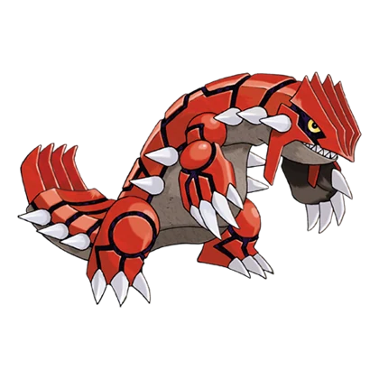
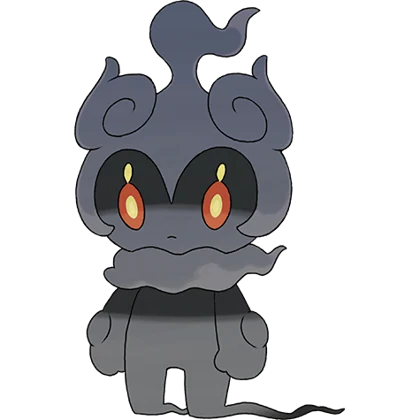
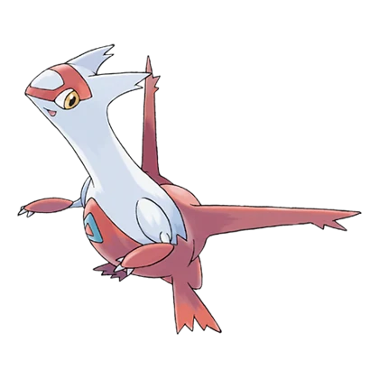
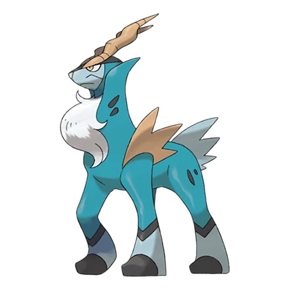

Recover all 25 encounters in the original 10-page fieldbook: Xerneas, Yveltal and Zygarde, the two Mystery Gift missions, Mega Dimension and the seven Special Scan possibilities. Each route tells you what the owner’s PDF actually records.
Obtained checkboxes use the same saved progress as the main GitHub guide on this browser/device. They do not sync to the original Workspace website or other devices.
FOLLOW A PRACTICAL ORDER
Which Legendary should I tackle next?
This route order follows the prerequisites actually written in the PDF, rather than guessing missing steps or placing random Special Scan species at fixed map points.
01
Finish the main story
After the credits, follow Mable and Vinnie for Xerneas and Yveltal; both are needed before Zygarde.
The Diancie and Mewtwo quests need the specified in-game gifts. The PDF does not establish current availability. Confirm the required gift is on your save before travelling.
Expansion requirements
The 13 Mega Dimension routes depend on the DLC. Many have named story gates, donuts, quests or currency requirements: follow those before trying to visit the target location.
Special Scans are not fixed pins
The seven Special Scan entries share an Unknown Zone method. The PDF’s sixth-scan guarantee refers to a group-level legendary encounter, not a promise of a chosen Pokémon on a particular scan.
Follow-up details to check later
Where the original capture omits a rooftop entrance, a final capture interaction or a precise post-wall route, the card marks that gap for the next player-verified walkthrough.
25 ORIGINAL ILLUSTRATED ROUTES
Every Legendary & Mythical field card
Pick your target below. You can search by Pokémon, district, item or mission, then expand the original steps. Tick Obtained after you actually receive the Pokémon; the checkmark is shared with the existing guide on this device.
Showing 25 of 25 encounters
No legendary route matches those filters. Clear the search or try another category.
NATIONAL #716
Base story
Xerneas
⌖ Wild Zone 11
After the credits, speak to Mable. Clear the anomalous Alphas in Wild Zones 3, 5 and 9, then enter Wild Zone 11 for the Xerneas encounter.
Route detailMission 40 · Level 75.
Read 3 practical steps for Xerneas
Finish the main story and speak with Mable after the credits.
Clear the anomalous Alpha encounters in Wild Zones 3, 5 and 9.
Enter Wild Zone 11 to begin Xerneas’s encounter.
These numbered checkpoints unpack the original PDF record; they are not separately verified discoveries.
Owner’s original Legends PDF · printed page 3 of 10

NATIONAL #383
Mega Dimension
Groudon
⌖ Jaune Sector 11 → Desolate Land
After Darkrai, research the ruby distortion, obtain Hoennian Salt, make the Omega Donut and enter the Jaune Sector 11 portal. Beat Groudon and Primal Groudon.
Route detailLevel 80 · Water attacks fail against Primal Groudon.
Read 4 practical steps for Groudon
After Darkrai, investigate the ruby distortion and obtain Hoennian Salt.
Make the Omega Donut.
Enter the portal in Jaune Sector 11 to reach Desolate Land.
Defeat Groudon and Primal Groudon. The PDF warns that Water attacks fail against the Primal form.
These numbered checkpoints unpack the original PDF record; they are not separately verified discoveries.
Finish the Rayquaza route in Hyperspace Mission 12. In Main Mission 39, reach the 15th Infinite Z-A Royale Reward Match and defeat Taunie or Urbain.
Speak to that teammate by Ansha’s donut stall at Hotel Z. Take the Prison Bottle and follow Corbeau’s call.
Find the scripted 5-star portal southwest of Wild Zone 16 in Bleu Sector 8. Take the Holovator on the south side of Bleu Sector 8 to reach the rooftops. Bring a 5-star donut.
Defeat Lv. 200 Hoopa Unbound. Bug moves hit its Psychic/Dark form for 4× damage. Use the Prison Bottle when prompted to receive Lv. 80 Hoopa Confined. The bottle lets you switch forms afterward.
Updated against the mission and encounter checks; the original PDF remains archived.
Owner’s original Legends PDF · printed page 6 of 10

NATIONAL #802
Mega Dimension
Marshadow
⌖ Café Bataille → Rouge Sector 1 training court
Talk to Gardie near Café Bataille, north of Wild Zone 6. At sunset, use Investigate in the Rouge Sector 1 court, then catch Lv. 80 Marshadow.
Route detailWait for Prism Tower’s shadow to reach the court’s centre circle. No donut is needed.
Read 4 practical steps for Marshadow
Finish the Rayquaza route in Hyperspace Mission 12.
Talk to Gardie on South Boulevard, north of Wild Zone 6 by Café Bataille.
Go to the Rouge Sector 1 training court near Centrico Pokémon Center at sunset.
When Prism Tower’s shadow reaches the centre of the Poké Ball circle and Investigate appears, interact with the spot. Battle and catch Lv. 80 Marshadow.
Owner’s original Legends PDF · printed page 7 of 10
NATIONAL #807
Mega Dimension
Zeraora
⌖ Racine Construction → Vert Sector 3 → Gare de Lumiose
Finish Rayquaza and both gift missions (EX1 Diancie and EX2 Mewtwo). Trade Canari Bread for Popping Candy and bring it to Ansha to unlock the EX3 route.
Route detailRogue Mega Zeraora is Lv. 200 during the battle; the Zeraora you catch afterward is Lv. 85.
Read 4 practical steps for Zeraora
Finish the Rayquaza route and both Mystery Gift side missions: EX1 for Diancie and EX2 for Mewtwo.
Buy Canari Bread from Tarragon inside Racine Construction for ₽1,300. Use the Holovator south of Vert Sector 3, east of Wild Zone 2. Trade the bread to the boy on the roof for Popping Candy.
Give the candy to Ansha at Hotel Z. For the Plasma-Glazed Donut, reach 40 Sweet, 200 Spicy, 400 Sour, 280 Bitter and 40 Fresh. One working recipe is 4 Hyper Kasib, 3 Hyper Chilan and 1 Hyper Babiri. If you are one Hyper Chilan short, use 4 Hyper Kasib, 2 Hyper Chilan, 1 Hyper Charti and 1 Hyper Babiri. Check that Ansha previews the Plasma-Glazed Donut before spending the berries.
After Emma calls, take the donut to the yellow mission portal outside Gare de Lumiose. Fight the Lv. 200 Rogue Mega, dodging Electroweb and using Ground moves. Catch Lv. 85 Zeraora afterward and collect Zeraorite.
Updated against the mission and encounter checks; the original PDF remains archived.
Owner’s original Legends PDF · printed page 7 of 10

NATIONAL #380
Special Scan
Latias
⌖ Unknown Hyperspace Zone
After Rayquaza, finish Side Mission 189, Siblings of the Sky, before spending points on a scan for Latias. Its trainer battle awards the Mega Stones. Catch Latias through a later 5★ Special Scan.
Route detailSide Mission 188 unlocks Special Scanning. Each scan costs 25,000 Hyperspace research points and does not guarantee your chosen Pokémon.
Read 4 practical steps for Latias
Finish the Rayquaza route in Mega Dimension.
Complete Side Mission 189, Siblings of the Sky. The trainer fight awards Latiasite and Latiosite, but you cannot catch either Pokémon in that fight.
Complete Side Mission 188, Start Special Scanning, if it is still open. Then spend 25,000 Hyperspace research points per scan with Philippe.
Look for Latias in the resulting 5★ Unknown Zone. If the scan rolls a different eligible Pokémon, try again when you have more points.
Scan odds: The original guide describes a group-level safeguard, not a guarantee for a particular species. The exact streak rule is not verified here.
Owner’s original Legends PDF · printed page 7 of 10
NATIONAL #381
Special Scan
Latios
⌖ Unknown Hyperspace Zone
After Rayquaza, finish Side Mission 189, Siblings of the Sky, before spending points on a scan for Latios. Its trainer battle awards the Mega Stones. Catch Latios through a later 5★ Special Scan.
Route detailSide Mission 188 unlocks Special Scanning. Each scan costs 25,000 Hyperspace research points and does not guarantee your chosen Pokémon.
Read 4 practical steps for Latios
Finish the Rayquaza route in Mega Dimension.
Complete Side Mission 189, Siblings of the Sky. The trainer fight awards Latiasite and Latiosite, but you cannot catch either Pokémon in that fight.
Complete Side Mission 188, Start Special Scanning, if it is still open. Then spend 25,000 Hyperspace research points per scan with Philippe.
Look for Latios in the resulting 5★ Unknown Zone. If the scan rolls a different eligible Pokémon, try again when you have more points.
Scan odds: The original guide describes a group-level safeguard, not a guarantee for a particular species. The exact streak rule is not verified here.
Owner’s original Legends PDF · printed page 8 of 10

NATIONAL #638
Special Scan
Cobalion
⌖ Unknown Hyperspace Zone
After Rayquaza, collect 25,000 Hyperspace research points and ask Philippe for a Special Scan. Explore the resulting Unknown Zone for a rare encounter.
Route detailA legendary encounter is guaranteed by the sixth scan without one until this group is caught.
Read 4 practical steps for Cobalion
Finish the Rayquaza route in Mega Dimension.
Collect 25,000 Hyperspace research points and request a Special Scan from Philippe.
Explore the Unknown Hyperspace Zone generated by that scan.
Check the legendary encounter; the PDF states a group-level encounter guarantee by the sixth unsuccessful scan, not a fixed species or city location.
These numbered checkpoints unpack the original PDF record; they are not separately verified discoveries.
Fresh-playthrough check: These are random Special Scan Unknown Zone encounters, not guaranteed fixed city-map placements. The exact sixth-scan safeguard should be confirmed during a fresh playthrough.
Owner’s original Legends PDF · printed page 8 of 10
NATIONAL #639
Special Scan
Terrakion
⌖ Unknown Hyperspace Zone
After Rayquaza, collect 25,000 Hyperspace research points and ask Philippe for a Special Scan. Explore the resulting Unknown Zone for a rare encounter.
Route detailA legendary encounter is guaranteed by the sixth scan without one until this group is caught.
Read 4 practical steps for Terrakion
Finish the Rayquaza route in Mega Dimension.
Collect 25,000 Hyperspace research points and request a Special Scan from Philippe.
Explore the Unknown Hyperspace Zone generated by that scan.
Check the legendary encounter; the PDF states a group-level encounter guarantee by the sixth unsuccessful scan, not a fixed species or city location.
These numbered checkpoints unpack the original PDF record; they are not separately verified discoveries.
Fresh-playthrough check: These are random Special Scan Unknown Zone encounters, not guaranteed fixed city-map placements. The exact sixth-scan safeguard should be confirmed during a fresh playthrough.
Owner’s original Legends PDF · printed page 8 of 10
NATIONAL #640
Special Scan
Virizion
⌖ Unknown Hyperspace Zone
After Rayquaza, collect 25,000 Hyperspace research points and ask Philippe for a Special Scan. Explore the resulting Unknown Zone for a rare encounter.
Route detailA legendary encounter is guaranteed by the sixth scan without one until this group is caught.
Read 4 practical steps for Virizion
Finish the Rayquaza route in Mega Dimension.
Collect 25,000 Hyperspace research points and request a Special Scan from Philippe.
Explore the Unknown Hyperspace Zone generated by that scan.
Check the legendary encounter; the PDF states a group-level encounter guarantee by the sixth unsuccessful scan, not a fixed species or city location.
These numbered checkpoints unpack the original PDF record; they are not separately verified discoveries.
Fresh-playthrough check: These are random Special Scan Unknown Zone encounters, not guaranteed fixed city-map placements. The exact sixth-scan safeguard should be confirmed during a fresh playthrough.
Owner’s original Legends PDF · printed page 9 of 10
NATIONAL #647
Special Scan
Keldeo
⌖ Unknown Hyperspace Zone
After Rayquaza, collect 25,000 Hyperspace research points and ask Philippe for a Special Scan. Explore the resulting Unknown Zone for a rare encounter.
Route detailA legendary encounter is guaranteed by the sixth scan without one until this group is caught.
Read 4 practical steps for Keldeo
Finish the Rayquaza route in Mega Dimension.
Collect 25,000 Hyperspace research points and request a Special Scan from Philippe.
Explore the Unknown Hyperspace Zone generated by that scan.
Check the legendary encounter; the PDF states a group-level encounter guarantee by the sixth unsuccessful scan, not a fixed species or city location.
These numbered checkpoints unpack the original PDF record; they are not separately verified discoveries.
Fresh-playthrough check: These are random Special Scan Unknown Zone encounters, not guaranteed fixed city-map placements. The exact sixth-scan safeguard should be confirmed during a fresh playthrough.
Owner’s original Legends PDF · printed page 9 of 10
NATIONAL #648
Special Scan
Meloetta
⌖ Unknown Hyperspace Zone
After Rayquaza, collect 25,000 Hyperspace research points and ask Philippe for a Special Scan. Explore the resulting Unknown Zone for a rare encounter.
Route detailA legendary encounter is guaranteed by the sixth scan without one until this group is caught.
Read 4 practical steps for Meloetta
Finish the Rayquaza route in Mega Dimension.
Collect 25,000 Hyperspace research points and request a Special Scan from Philippe.
Explore the Unknown Hyperspace Zone generated by that scan.
Check the legendary encounter; the PDF states a group-level encounter guarantee by the sixth unsuccessful scan, not a fixed species or city location.
These numbered checkpoints unpack the original PDF record; they are not separately verified discoveries.
Fresh-playthrough check: These are random Special Scan Unknown Zone encounters, not guaranteed fixed city-map placements. The exact sixth-scan safeguard should be confirmed during a fresh playthrough.
Owner’s original Legends PDF · printed page 9 of 10
COLLECTION PREPARATION
Before entering a rare encounter
Confirm your story gate
Read the specific card’s prerequisite before travelling. Mission 40–42, post-Darkrai, post-Rayquaza and Mystery Gift conditions are not interchangeable.
Tick a Pokémon only once it joins your collection. Your 25 checkmarks appear in the main guide as well, without changing your story, side-quest, item or Screw progress.
 NATIONAL #716
NATIONAL #716 NATIONAL #718
NATIONAL #718 NATIONAL #719
NATIONAL #719 NATIONAL #150
NATIONAL #150 NATIONAL #485
NATIONAL #485 NATIONAL #491
NATIONAL #491 NATIONAL #384
NATIONAL #384 NATIONAL #808
NATIONAL #808 NATIONAL #720
NATIONAL #720 NATIONAL #807
NATIONAL #807 NATIONAL #381
NATIONAL #381 NATIONAL #639
NATIONAL #639 NATIONAL #640
NATIONAL #640 NATIONAL #647
NATIONAL #647 NATIONAL #648
NATIONAL #648